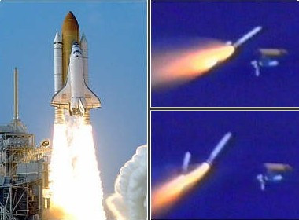

A shuttle flight, from launch to landing is called a mission and follows a set profile. This page gives main steps in a typical Space Shuttle mission. Details of some of the steps will vary depending on the purpose and objectives of the mission.
All flights, however, include the following main steps: 1. Launch: - Orbiter, Solid Rocket Boosters and External Tank. 2. First Stage Ascent: - Orbiter main engines and Solid Rocket Boosters operating.
- Solid Rocket Boosters separate and parachute to spashdown in the ocean. 3. Second Stage Ascent: - Orbiter main engines operating.
- Orbiter main engines cut-off and External tank separates.
- The two orbital manoeuvring system engines are fired for orbital insertion. 4. Orbit: - Orbiter in free flight.
- On-orbit operations are performed. 5. De-Orbit: - Orbital manoeuvring engines fired to slow Orbiter for re-entry. 6. Landing: - Orbiter glides, un-powered, to a runway landing.
More information is given in the sections below:- Flight Main Steps - Details of each of the six main steps. Flight Activities Table - A time-line of a typical shuttle mission.
Flight Main Steps
1. Launch
The space shuttle is launched in a vertical position, with thrust provided by two solid rocket boosters, called the first stage, and three space shuttle main engines in the orbiter, called the second stage. The shuttle main engines are supplied with fuel from the External Tank. At lift off, both the boosters and main engines are operating.

Shuttle Discovery
Launch (left) and SRB Separation (right)
To achieve orbit, the shuttle must accelerate from zero to a speed of almost 28,968 kph, a speed nine times as fast as the average rifle bullet.
To travel that fast, it must reach an altitude above most of Earth's atmosphere so that friction with the air will not slow it down or over heat it.
The journey starts relatively slowly:
at lift off, the shuttle weighs more than 2.04 million kilograms and it takes eight seconds for the engines and boosters to accelerate it to 161 kph.
After the first minute the shuttle is travelling more than 1,609 kph.
2. First Stage Ascent
Two minutes into the flight the shuttle is about 45 km high and travelling more than 4,828 kph. The propellant in the two boosters is now exhausted and the booster casings are jettisoned to parachute into the Atlantic Ocean and be recovered by ships for re-use.
3. Second Stage Ascent
The three space shuttle main engines, attached to the rear of the shuttle orbiter, continue to fire until about 8.5 minutes after lift off, burning a half-million gallons of liquid propellant from the external fuel tank as the shuttle accelerates. The engines' exhaust is primarily water vapour and generate over 37 million horsepower as they push the shuttle toward orbit.
Eight and a half minutes after launch, with the shuttle travelling 29,000 kph, the engines shut down as they use the last of their fuel. A few seconds after the engines stop, the external fuel tank is jettisoned from the shuttle. This tank is the only part of the shuttle that is not reused and burns up as it re-enters the atmosphere.
4. Orbit
After the main engines shut down, the shuttle is in an elliptical orbit that, if nothing changed, would cause it to re-enter the atmosphere like the External Tank. When the shuttle has reached the highest point of the orbit, 35 minutes after the main engines have shut down, the two orbital manoeuvring system engines are fired for three minutes.
This circularizes the shuttle's orbit at a safe altitude to keep it above the atmosphere. The orbital manoeuvring system engines are located on the left and right side of the shuttle's tail. They use two propellants that automatically burn whenever they contact one another.
The shuttle is the only spacecraft ever built that can retrieve large satellites from orbit and bring them back to Earth. Using the Canadian-built robotic arm, called the Remote Manipulator System, shuttle crews can move large objects into or out of the payload bay.
This arm, mounted on the left-hand edge of the payload bay, can also manoeuvre space walking astronauts into positions for satellite and space station repairs and maintenance.
5. De-Orbit
To return to Earth, the shuttle is rotated tail first into the direction of travel to prepare for the de-orbit burn of the orbital manoeuvring system engines. This engine firing, usually about three minutes long, slows the shuttle by only about 300kph, but it is enough that it begins to descend toward the atmosphere.
The engine firing takes place usually half a world away from the intended landing site. The rest of the slowing down for descent uses only the drag produced by the atmosphere. The aft steering jets are used to control the shuttle's orientation as it descends into the atmosphere.
Around 25 minutes after the de-orbit burn the shuttle descends to a point where it first encounters the effects of the atmosphere, usually at an altitude of about 129 km and a range of more than 8,047 km from the landing site.
Before the shuttle encounters the atmosphere, leftover fuel is burned from the forward reaction control system steering jets as a safety precaution.
Before the shuttle reaches the upper atmosphere it is oriented with the nose angled up about 40 degrees from horizontal and its wings level. This orientation keeps the thermal tiles on the underside facing the majority of the heat generated by its encounter with the atmosphere. The heat can range as high as 1,648.9 degrees Celsius on the leading edges of the wings and nose.
6. Landing
As the shuttle descends into the atmosphere it begins a transition from spacecraft to aircraft. Its aero-surfaces, the wing flaps and rudder, gradually become active as air pressure builds and the steering jets turn off automatically.
The shuttle then performs a series of four steep banks, rolling over as much as 80 degrees to one side or the other, to slow down. The series of banks gives the shuttle's ground track toward landing an appearance similar to a highly elongated letter "S".
Approach to the landing site uses the following aids to navigation:
* A radio beacon from the Tactical Air Navigation System, or TACAN, provides updated bearing information to the shuttle to aid in steering toward the runway.
* Two air data probes are deployed from either side of the nose of the shuttle as it continues toward landing and its speed drops to less than three times the speed of sound, or Mach 3. These probes provide supplemental information on the airspeed and altitude derived from the outside barometric pressure and wind speed.
* The shuttle's flight control computers are in control of the spacecraft until it is about 40 km from touchdown.
* The commander takes over manual control when the shuttle's speed drops below the speed of sound and is at an altitude of 15,240 meters (50,000 feet).
* The Microwave Scanning Beam Landing system which is installed at shuttle landing sites is used as an approach aid.
* The commander normally flies the shuttle around an imaginary cylinder to align with the runway.
* The shuttle then begins a steep descent with the nose angled as much as 19 degrees down from horizontal, a glide slope that is seven times as steep as the average commercial airliner landing. During the final approach, the shuttle drops toward the runway 20 times faster than a commercial airliner as its rate of descent and airspeed increase.
* The commander pulls up the nose and slows the rate of descent when the shuttle is less than 610 meters (2,000 feet) above the ground. At this point, the pilot deploys the landing gear and the shuttle touches down.
* After touchdown, the pilot deploys a drag chute from a compartment located just below the tail and the commander begins to drop the shuttle's nose gear slowly toward the runway. The drag chute is then jettisoned before the wheels come to a stop to ensure that it falls clear of the shuttle.
Flight Activities Table
The following table gives a time-line of the main activities in each step of a typical shuttle flight.
Step
Sequence
Activity
Launch
T minus 20 mins
Pre-launch functions are controlled by ground computer network at launch site.
T minus 9 mins
Ten to 40 minute hold as final launch preparations are made
Three shuttle main engines ignite in staggered intervals 120 milliseconds apart.
T minus 3 secs
Shuttle main engines commanded to lift off position.
T minus 0 secs
Onboard computers ignite solid rocket boosters, three main engines at 100 percent thrust level, ground launch sequence terminated, lift off of the space shuttle.
1st. Stage Ascent
T plus 20 secs
Shuttle rolls 180 degrees at a 78-degree pitch.
T plus 26 secs
Main engines throttled down due to maximum dynamic pressure.
T plus 60 secs
Main engines throttled up to 104 percent thrust.
T plus 2:06 mins
Solid rocket boosters separate.
2nd. Stage Ascent
T plus 7:40 mins
Main engines throttled down to maintain acceleration below 3g's for structural limits.
T plus 8:30 mins
Main engine cut off sequence begins.
T plus 8:33 mins
Main engines throttled down to 65 percent thrust.
T plus 8:40 mins
Main engine cut-off, automatic sequence confirms main engine shut down and begins external tank separation sequence.
T plus 8:58 mins
External tank separates from orbiter.
Orbit
Orbit Insertion
Orbital manoeuvring system fires to place shuttle in circular orbit about two minutes after main engine cut-off.
On-Orbit
Guidance, navigation and control systems ensure proper position, velocity and attitude.
Payload bay doors open for heat rejection.
Orbit flight control software regulates reaction control system and orbital manoeuvring system firings.
On-Orbit Checkout
Checkout performed day before de-orbit.
Left and right main engine nozzles repositioned, hydraulic system activated and checked, all cockpit displays and controls checked.
De-Orbit
Preparation
Payload bay doors closed.
De-orbit burn
The orbiter rotates 180 degrees and the orbital manoeuvring system fires to slow the orbiter down.
The reaction control system fires to manoeuvre the shuttle to entry attitude -- nose first, angled up 40 degrees.
Entry
Entry phase begins 5 minutes before the shuttle re-enters the atmosphere at an altitude of 169,773 m. (557,000 ft.)
Between the altitudes of 80,772 m. (265,000 ft.) and 49,377 m. (162,000 ft.) the shuttle generates intense heat. Radio communications are blocked for 16 minutes.
During re-entry, guidance software manages the shuttle's trajectory, while protecting against over heating and excessive pressure.
The shuttle coasts till the atmosphere is reached at 121,920 m.
Landing
Navigation
Radio beacon from the Tactical Air Navigation System, or TACAN, is received when the shuttle is about 225 km from the landing site
and at an altitude of about 45,720 m.
Two air data probes are deployed from either side of the nose of the shuttle when its speed drops to less than three times the speed of sound, or Mach 3.
Shuttle's flight control computers are in control of the spacecraft until it is about 40 km from touchdown.
Manual Control
The Commander takes over manual control of the approach and landing when the shuttle's speed drops below the speed of sound at an altitude of about 15,240 m.
The Commander flies the shuttle around an imaginary cylinder to align with the runway completing almost a full 6.4 km diameter circle of one end of the runway.
During the circle, the shuttle's altitude drops from 15,240 m to about 3,048 m as it begins to align with the runway.
To align with the runway, the shuttle begins a steep descent with the nose angled as much as 19 degrees down from horizontal.
The commander pulls up the nose and slows the rate of descent when the shuttle is less than 610 m above the ground. The pilot then deploys the landing gear.
Touch Down
The shuttle's main landing gear touches down. The shuttle is dropping at 8 kph with a forward speed of about 354 kph.
After touchdown, the pilot deploys a drag chute from a compartment located below the tail and the commander begins to drop the shuttle's nose gear
slowly toward the runway.
The drag chute is then jettisoned before the wheels come to a stop to ensure that it falls clear of the shuttle.
Clean-up
Toxic residue is removed from the shuttles external surfaces before the crew exits.


 Around 25 minutes after the de-orbit burn the shuttle descends to a point where it first encounters the effects of the atmosphere, usually at an altitude of about 129 km and a range of more than 8,047 km from the landing site.
Around 25 minutes after the de-orbit burn the shuttle descends to a point where it first encounters the effects of the atmosphere, usually at an altitude of about 129 km and a range of more than 8,047 km from the landing site.